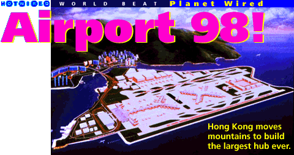
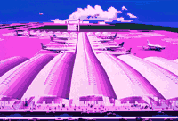

In his 1988 book, Video Night in Kathmandu, Pico Iyer described Hong Kong as "the world's great community of transients and refugees ... a dervishing congregation of self-interests." It is a restless city whose soul is never far from the departure gate.
For years, the Territory's port of entry has been Kai Tak airport, which Iyer called "the Grand Central Station of the Orient." But after a half-century of service, Kai Tak will close down, leaving behind some of the priciest real estate in Hong Kong.
As Kai Tak nears retirement, a new airport is being born at Chek Lap Kok. It is the largest, costliest construction project in the world. An international team of architects, engineers, and planners are transforming an ancient landscape into the flagship airport of the 21st century. Nearly 20,000 workers will populate the site by next year, forming several on-site villages complete with "currency," shops, sports facilities - and some minor social problems.
 The environmental impacts of such a major project are extreme, needless to say. With Chek Lap Kok island now an ecological wasteland, local environmentalists have focused their energies on the surrounding littoral zone. There, a rare breed of dolphin struggles to survive in a coastal ecosystem wracked by blasting and reclamation.
Hong Kong's new airport is scheduled to open in 1998 - one year after the territory's return to Chinese sovereignty. At that time, Chek Lap Kok will be the most sophisticated air terminal in Asia, if not the world. It is designed to accommodate 35 million passengers and almost 3 million tons of cargo a year. At its heart will be a kilometer-long terminal building, designed by British architect Norman Foster. It vaguely resembles an intergalactic battle cruiser.
An extensive transportation network will connect Chek Lap Kok to the heart of the city 15 miles away. A high-speed rail link will whisk passengers to their planes in less than 30 minutes. Expressways leading to the airport will pass over two major bridges, including the longest rail-and-road suspension structure in the world.
Story and sound recordings by Thomas J. Campanella
Audio and video digitizing by Benny Chow Ka-Ming
Video clips, photographs, and computer renderings courtesy of the Provisional Airport Authority (PAA), Hong Kong, unless otherwise noted.
Computer animation by Virtually Real and Centro Digital, Hong Kong, used with the permission of the PAA.T H R E A D S : 6 topics, 46 links.
The permanent location of this page is
http://www.hotwired.com/planet/95/42/index5a.htmlCopyright © 1995 HotWired Ventures LLC. All rights reserved.